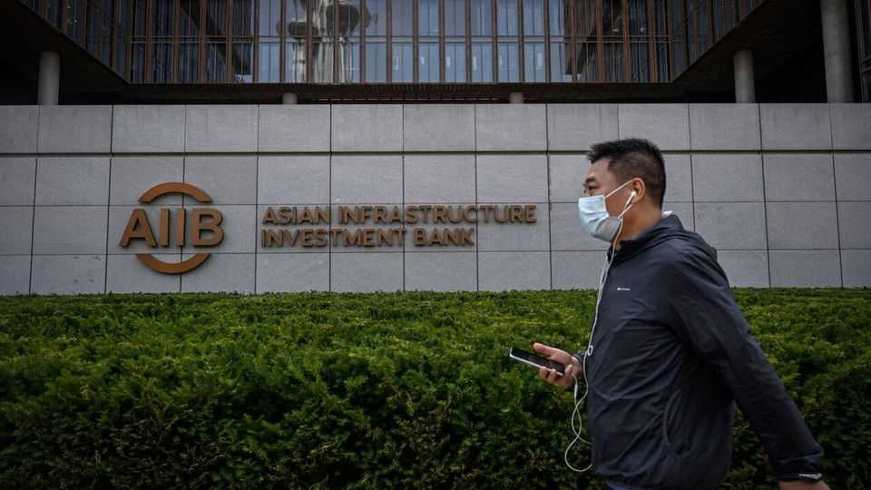
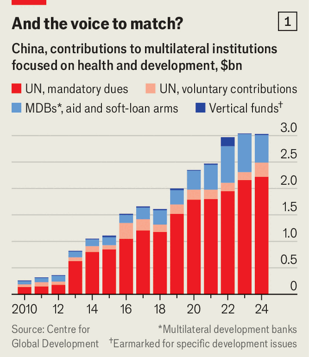
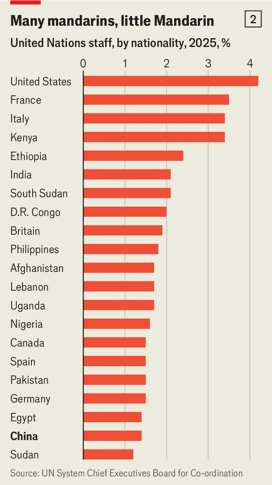

China is channelling much more money to poor countries
It wants a greater say in organisations that hand it out

Oct 15th 2026
Chinese diplomats often talk about the threat of a “Thucydides trap”, named after the Greek historian who described how an incumbent power, Sparta, fought to resist the rise of an upstart, Athens. In the realm of foreign aid, however, such fierce rivalry has been sadly absent in recent years. Another trap, identified by Charles Kindleberger, an economic historian, looks dangerous, too. He described what happens when a stabilising superpower cedes its global role before the emerging power is ready or willing to assume it. America was slow to fill Britain’s shoes in the interwar years of the 20th century. And there is now a similar gap in the realm of multilateral giving.
America has tired of the international institutions it helped create. Last year the aid it channelled through multilateral organisations like the World Bank and the UN fell by half. It has withdrawn from the UN’s World Health Organisation—and it still owes the WHO money.
China could have rushed boldly into this void. And it has indeed stumped up more cash. But its approach lacks Athenian assertiveness. “China is not currently either willing or able to fill the financial gap that would be left behind by US withdrawal,” points out Beata Cichocka of the Centre for Global Development, a think-tank in Washington.

With her colleague Ian Mitchell she has tried to add up China’s contributions to multilateral aid, channelled through development banks, UN agencies and 26 “vertical” funds that collect money for specific problems such as climate change. China itself founded some of these institutions, including the Asian Infrastructure Investment Bank, based in Beijing, and the New Development Bank in Shanghai.
China’s giving to these bodies has increased steeply over the past decade, from about $1bn in 2014 to more than $3bn in 2024 (see chart 1). China has, for example, become the largest donor to the WHO among its member states, promising an extra $500m over five years. It has backed Song Li, a Chinese health official, to become the organisation’s boss when the position opens up next year.
China has also pledged more money to the International Development Association, a World Bank outfit that provides aid and cheap loans to 78 of the world’s poorest countries. China was itself once one of those hard-up countries, receiving almost $10bn in soft loans from 1981 until it ceased to be eligible in 1999. China’s “transformation from major borrower to significant donor represents one of the most remarkable trajectories in multilateral development finance”, as the report points out.
This transformation is all the more welcome given the remarkable retreat of other donors. But much of China’s extra multilateral giving is mandatory, not voluntary: it must pay more dues because of its economic growth. Even the $500m pledged to the WHO mostly reflects an increase in membership dues, judging by the patchy information available. China is doing its bit. But it is not going far beyond its duty.

Perhaps this should not be a surprise. China’s GDP per person is still middling by world standards. It has only just reached the income threshold at which countries typically “step up their contributions”, points out Mr Mitchell. And China’s increased giving has not been matched by a comparable increase in voting power or voice within the institutions it finances. China’s government is “seized [by] this feeling that they pay and therefore they should have [a] say,” says Courtney Fung of Macquarie University. Its voting share in the World Bank remains at less than 6%. According to formulas the bank has used in the past, it should be more than 12%.
China’s share of UN staff is also tiny: 1.4%, ranking only 20th (see chart 2). It is trying to change that by funding more junior professionals and other entrants. China contributed 773 interns in 2022-23 compared with America’s 532. But the country’s civil servants still struggle with language barriers and unfamiliar work habits.
Some obstacles are self-imposed. China, for example, screens its candidates for patriotism (which includes political loyalty). And civil servants who have spent too long abroad worry that their home networks are “going stale”, says Ms Fung. Perhaps the Athenians felt the same way.■
Subscribers can sign up to Drum Tower, our new weekly newsletter, to understand what the world makes of China—and what China makes of the world.